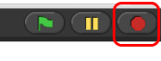

What do you think the following script will do?

 and
and
 are reporters in the Sensing
palette. They report the mouse's location on the screen.
are reporters in the Sensing
palette. They report the mouse's location on the screen.
Find  and the other and the other necessary parts and build this script.
Click on the forever block to run it.
Did it follow your expectations?
and the other and the other necessary parts and build this script.
Click on the forever block to run it.
Did it follow your expectations?
To stop this program, click on the stop sign icon on the
upper right hand corner of the snap window.

This stop sign will stop all scripts that are running in any sprite. This is
equivalent to executing the  in the
in the Control palette.
Now change the go to block to look like this:
How does this change the program's behavior?